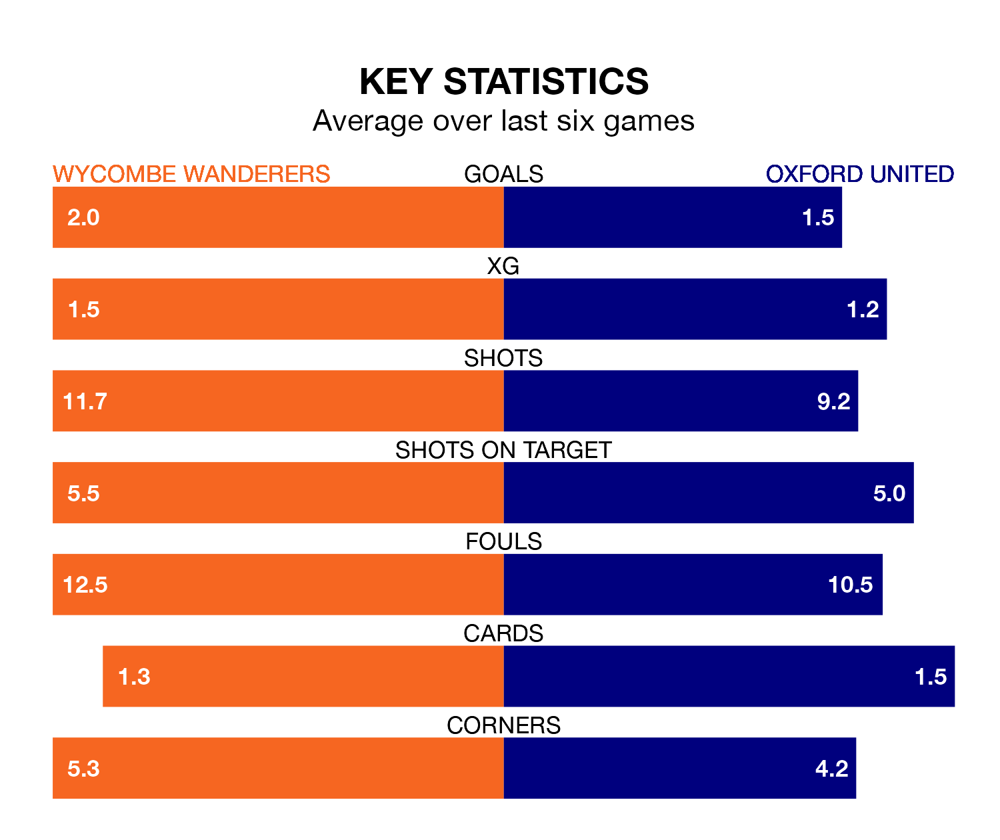

Wycombe Wanderers host Oxford United on Saturday at Adams Park in EFL League One.
In their last league match, on Tuesday, Wycombe lost to Bolton Wanderers 2-1 away, with their goal scored by Luke Leahy.
Oxford won, 4-2 at home against Wigan Athletic, with Cameron Brannagan, Josh Murphy, Rúben da Rocha Rodrigues and Tyler Goodrham on the scoresheet.
With 54 goals in 32 games so far this season, Oxford are scoring more than average in the league with 1.7 goals per game. And they are conceding fewer than average, letting in 40 goals at a rate of 1.2 per game.
Wycombe, meanwhile, are average scorers, with 1.3 goals per game. They have conceded 1.4 goals per game.
In the last 10 years, Wycombe and Oxford have played each other on 12 occasions. Wycombe won five of them, Oxford four, and they drew three times.
On average, the Chairboys scored 1.0 goal and the Us 1.1 in those matches.
Their last meeting was on October 28, when they played out a 2-2 draw.
United are sixth in the table after 32 games, of which they have won 16 and drawn seven, earning 55 points.
Wanderers are 10 places behind the Us in 16th, with nine wins and 10 draws putting them on 37 points.
The Chairboys are in mixed form in EFL League One, with two wins and two draws from their last six games.
With a win and three draws over that period, the visitors' form is slightly worse – they have taken six points from 18, compared to the home team's eight.
Saturday's match will be refereed by Simon Mather, who has taken charge of 10 EFL League One games so far this season, issuing seven red cards and booking 60 players. He has awarded one penalty.
The last Oxford game Mather refereed was the 2-1 win at home against Bristol Rovers on October 7. He is yet to oversee a match featuring Wycombe this season.
Updated: 13:04 (UTC), 16/02/24